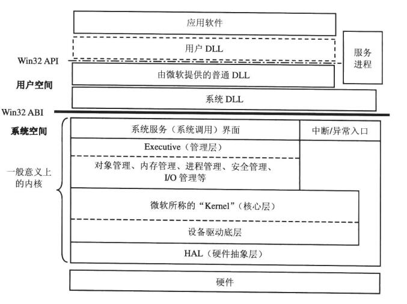

Windows 系统结构图

图中水平粗线表示用户空间和系统空间的分界.
在 32 位 Windows 系统中, 整个 4GB 的虚拟内存地址被对分成两块, 从地址 0x80000000 开始向上是系统空间, 就是内核所在的地方, 下面则是用户空间, 是应用程序所在的地方.
CPU 进入内核只有三种途径:
- 系统调用
- 中断
- 异常
中断请求等级 IRQL
在 x86 系统上, 内核在内部使用 0~31 的数值来表示 IRQL;
而在 x64 和 IA64 系统上, 内核采用 0~15 的数值表示 IRQL.
这里数值越大, 代表的中断请求等级越高.
内核为软件中断定义了一组标准的 IRQL, 而 HAL 则将硬件中断号映射为 IRQL.
x86 中断请求级别:
| 数值 | 描述 |
|---|---|
| 31 | 高端 |
| 30 | 电源失败 |
| 29 | 处理器间的中断 |
| 28 | 时钟 |
| 27 | 性能剖析/同步 |
| 26 | 设备n |
| … | … |
| 5 | 可纠正的机器检查 (CMCI) |
| 4 | … |
| 3 | 设备1 |
| 2 | DPC/dispatch |
| 1 | APC |
| 0 | User-APC/被动/低端 |
x64 中断请求级别
| 数值 | 描述 |
|---|---|
| 15 | 高端/性能剖析 |
| 14 | 处理期间的中断/电源 |
| 13 | 时钟 |
| 12 | 同步 |
| 11 | 设备n |
| … | … |
| 4 | … |
| 3 | 设备1 |
| 2 | DPC/dispatch |
| 1 | APC |
| 0 | User-APC/被动/低端 |
- 高端级别: 内核仅当它在 KeBugCheckEx 中停止了系统并屏蔽了所有中断时, 才会使用高端级别的 IRQL.
- 电源失败级别: 文档指定了系统电源失败代码的行为, 但是这个 IRQL 从未被使用过…
- 处理器间的中断级别: 被用于向另一个处理器请求执行某个动作,比如更新该处理器的 TLB 缓存, 系统停机或者系统崩溃.
- 时钟级别: 主要用于系统的时钟,内核利用该中断级别来跟踪日期和时间,以及为线程测量或分配 CPU 时间.
- 性能剖析级别: 当内核的性能剖析功能被打开时, 系统的实时时钟(或另一个中断源,比如本地APIC定时器)就会用到性能剖析级别. 当内核的性能剖析功能激活时, 内核的性能剖析陷阱处理器就会记录下中断发生时被执行代码的地址. 随着时间推移, 一张采样表就会生成.
- 同步级别: 内核内部使用的, 分发器和调度器利用该级别来保护对全局线程调度代码和等待/同步代码的访问.通常定义在设备IRQL最高级别之后
- 设备级别: 用于对设备中断进行优先级区分.
- CMCI级别: 当CPU或固件通过MCE机器检查错误接口报告一个虽然严重但是可以纠正的硬件条件或错误时使用.
- DPC/dispatch 级别 和 APC 级别: 是有内核和设备驱动程序产生的软件中断
- 低端/被动级别: 实际上不是中断级别; 它是普通线程运行时的设置, 此时所有的中断都允许发生.
中断是按照优先级处理的, 高优先级的中断会抢占低优先级中断的执行权.
当一个高优先级的中断发生时, 处理器把中断的线程状态保存起来, 并调用与该中断关联的陷阱分发器.
该陷阱分发器提升 IRQL, 并调用该中断的服务例程. 完成后再降低处理器的 IRQL, 然后装入保存的机器状态, 从中断的地方恢复执行.
Windows 内核函数的名称前缀
表中列出了内核函数的大多数名称前缀, 其中每个也都会使用前缀变化形式来标记内部函数.
例如前缀的第一个字母后面跟一个 i (代表内部的 internal), 或者整个前缀后面跟一个 p (代表私有的, private), 或者前缀后面跟一个 f (代表快速的, fast). Ki 代表内核内部函数, Psp 代表内部的进程支持函数, Obf 代表对象管理器的快速调用函数.
| 前缀 | 内核组件 |
|---|---|
| Alpc | 高级本地进程间通信 (Advanced Local Inter-Process Communication) |
| Cc | 公共缓存 (Common Cache) |
| Cm | 系统配置管理器 (Configuration manager) |
| Dbgk | 用户模式调试框架 |
| Em | 错误修正管理器 |
| Etw | Windows 事件跟踪 |
| Ex | 管理层 (Executive) |
| FsRtl | 文件系统驱动程序运行库 |
| Hvl | 超级管理器库 |
| Hal | 硬件抽象层 (Hardware abstraction layer) |
| Io | I/O管理器 (I/O manager) |
| Kd | 内核调试器 (Kernel debug) |
| Ke | 核心层 (Kernel core) |
| Lsa | 本地安全权威 |
| Mm | 内存管理器 (Memory manager) |
| Ob | 对象管理器 (Object manager) |
| Pf | 预取器 |
| Po | 电源管理器 (Power manager) |
| Pp | Pnp 管理器 (Pnp magager) |
| Ps | 进程支持 (Process support) |
| Rtl | 运行库 (Runtime library) |
| Se | 安全性 |
| Sm | 存储管理器 (Store manager) |
| Tm | 事务管理器 (Transaction manager) |
| Vf | 检验器 (Verifier) |
| Wdi | Windows 诊断设施 (Windows Diagnostic Infrastructure) |
| Whea | Windows 硬件错误体系架构 (WIndows Hardware Error Architecture) |
| Wmi | Windows 管理设施 |
| Nt | NT系统服务 (Native system services) |
| Zw | 与 R3 中 Zw 为 Nt 的别名不同, 在内核中 Zw 是以 Nt 开头的系统服务入口点的镜像, 它把原来的访问模式设置为内核模式, 从而消除了参数的有效性检查过程, 因为 Nt 系统服务只有当原来的访问模式为用户模式时才进行参数有效性检查. |
寄存器
段寄存器
接下来看一下各种段寄存器(CS, DS, SS, ES, FS, GS)在 Windows 中的作用.
CS (Code Segment)
代码段寄存器, 指向包含程序指令的段DS (Data Segment)
数据段寄存器, 指向包含静态数据或全局数据的段SS (Stack Segment)
栈段寄存器, 指向当前程序栈的段ES (Extra Segment)
附加段寄存器, 暂时不知道干嘛的FS (Flag Segment)
标志段寄存器
在 x86 系统, Ring3 中, FS:[0] 指向 nt!_TEB; Ring0 中, FS:[0] 指向 nt!_KPCR
在 x64 系统, 只有在 WOW64 进程中, FS 寄存器才会同 x86 寄存器一样, 其他情况未使用GS (Global Segment)
全局段寄存器
在 x86 系统, 未使用
在 x64 系统, 代替了 FS 寄存器, x86系统下的功能.